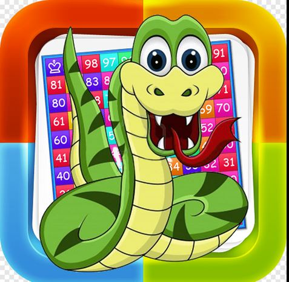
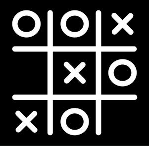

..SNAKE AND LADDER GAME..

Snake and Ladder is a classic board game often played by 2 or more players.
The game consists of a grid of numbered squares, with some squares connected
by ladders which allow players to climb up and snakes which cause players to slide down.
Features:
- Objective: The goal is to be the first player to reach the last square.
- Players take turns rolling a die to determine the number of squares to move.
- Landing on a ladder lets players climb up; landing on a snake sends them down.
- This game teaches counting, turn-taking, and coping with progress unpredictability.
...TIC-TAC-TOE GAME..

Tic Tac Toe is a simple and popular two-player game played on a 3x3 grid.
Features:
- Objective: Align three symbols (X or O) horizontally, vertically, or diagonally.
- Players take turns placing their symbol on the grid.
- The game ends when a player wins or when all cells are filled, resulting in a draw.
- A great introductory game for logical thinking and problem-solving skills.